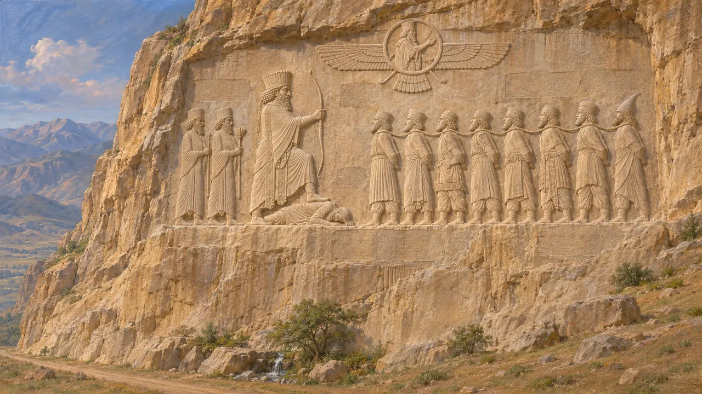
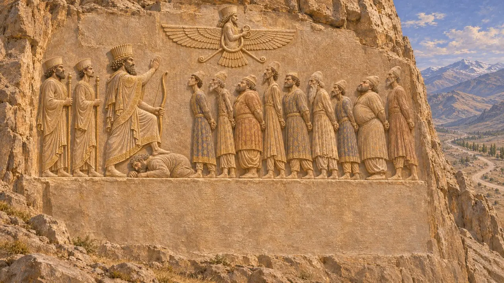
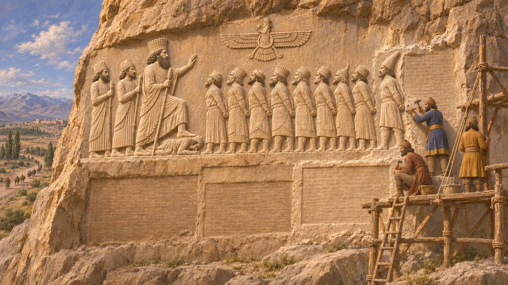
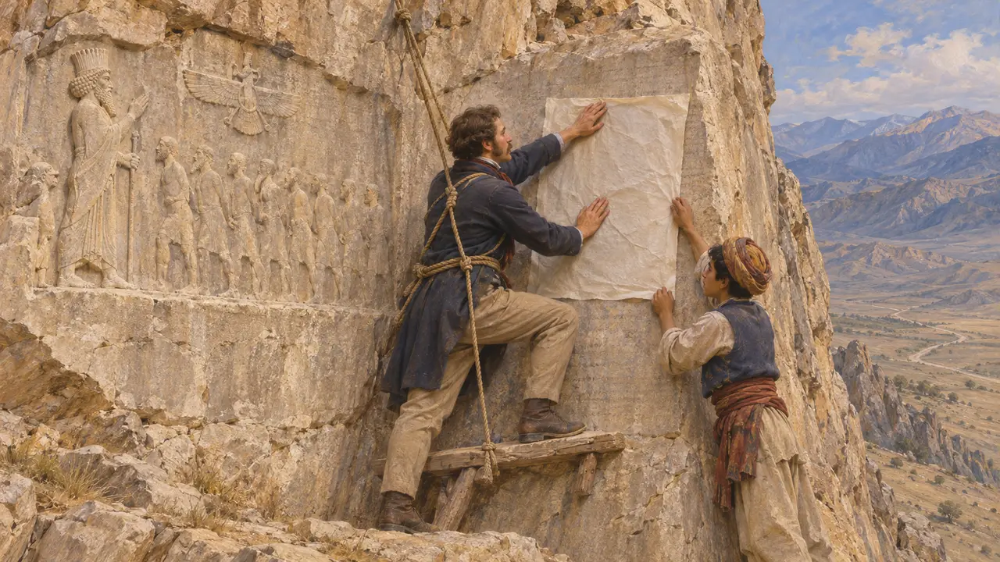
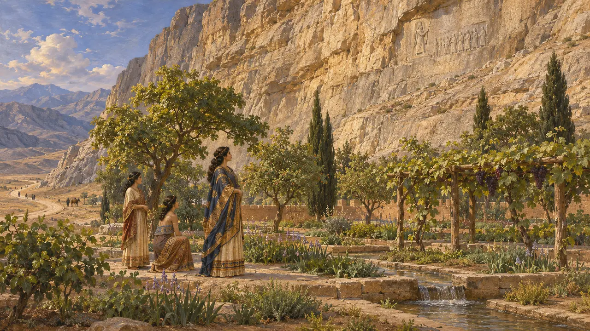

贝希斯敦是扎格罗斯山中的一处崖壁，靠近今克尔曼沙赫。公元前522-521年的叛乱平定后，大流士一世命人在此刻下浮雕及其夺取王位的记述。铭文以埃兰语、巴比伦语和古波斯语写成，是篇幅最长的阿契美尼德王室铭文，也是唯一详细叙述事件经过的一篇。19世纪，它成为破译楔形文字的关键。
游戏中： 巴加斯塔纳一关设定在公元前522至前521年，即这座纪念碑所记载的叛乱之年；石刻本身则完成于其后，约公元前520至前518年。编年史注释将破译之功归于罗林森，这一说法虽算公允却有所简化，因为破译工作也有他人的贡献。

埃克巴坦那大道上方的王室浮雕
见于史载这座纪念碑高踞比索通山崖壁之上，距下方的泉水和自巴比伦尼亚通往埃克巴坦那的古道约60米。浮雕中，大流士手执弓，一足踏在倒地的高墨达身上，面对九名颈部以绳索相连的叛军首领，上方有一位立于圆盘中的带翼人像。国王身后站着两名侍从，每名俘虏旁都刻有简短的题铭，标明其名。
Darius, Behistun relief labels (DBa-DBk)

大流士命人镌刻的文字
见于史载大流士将自己的世系追溯至阿契美尼斯，并讲述了他如何诛杀高墨达——一个冒称巴尔迪亚篡夺王位的麻葛。随后他列举了自己平定的叛乱者，其中有米底的弗拉瓦尔提什、波西斯的瓦希亚兹达塔和巴比伦的阿拉卡，并列出了助他成事的六人之名。他下令将抄本送往帝国各地。一份写于莎草纸上的阿拉米语译本出自象岛并留存至今，巴比伦也出土了巴比伦语译本的残片。
DB §§1-4, 13, 52, 68, 70

分期建成的纪念建筑
争夺中岩壁表明这项工程是分阶段完成的：先是浮雕和一篇埃兰语铭文，然后是巴比伦语版本，最后是古波斯语版本。后来添刻的塞种俘虏斯昆卡像切入了最初的埃兰语铭文，该铭文于是改刻在别处。学者们争论古波斯文字是否为这座纪念碑而创制，DB §70似乎暗示如此。他们还争论大流士所杀之人究竟是大流士与希罗多德所说的冒名者，还是真正的巴尔迪亚。
R. Schmitt, The Bisitun Inscriptions of Darius the Great, 1991; Herodotus 3.61-79

罗林森与楔形文字的释读
争夺中英国军官亨利·罗林森于1835年开始抄录古波斯语铭文，并于1844年和1847年重返此地，其间一名当地少年协助他制作了巴比伦语铭文的纸模拓片。他在格罗特芬德早期研究的基础上，于1846年至1847年发表了古波斯语铭文，而他抄录的巴比伦语文本对释读阿卡德语至关重要。破译之功究竟归属何人至今仍有争议，因为爱德华·欣克斯、儒勒·奥佩尔等人也各自独立取得了关键进展。
H. C. Rawlinson, The Persian Cuneiform Inscription at Behistun, 1846-47

塞米拉米斯与众神之地
后世传说狄奥多罗斯大概取材于克特西亚斯，称这座山为巴吉斯塔农，说它是宙斯的圣山。他将这处雕刻归于亚述女王塞米拉米斯，据说她曾在山脚下修建花园。这个希腊名称大概保留了经学者构拟的古波斯语巴加斯塔纳，意为“众神之所”，但塞米拉米斯的故事是后世的杜撰。中世纪的波斯诗人则将这面崖壁与法尔哈德联系起来——他为了对希琳的爱而劈开群山。
Diodorus 2.13; Nizami, Khosrow and Shirin
来源
- Darius, Behistun inscription (DB)
- R. Schmitt, The Bisitun Inscriptions of Darius the Great: Old Persian Text, 1991
- A. Kuhrt, The Persian Empire, 2007
- P. Briant, From Cyrus to Alexander, 2002
- Herodotus 3.61-88
- Diodorus 2.13